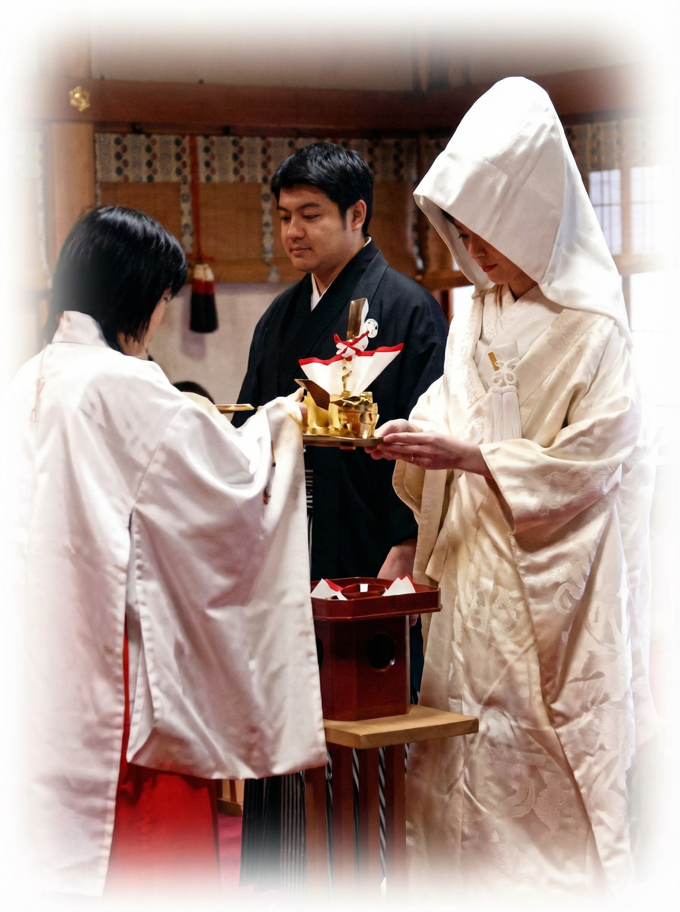
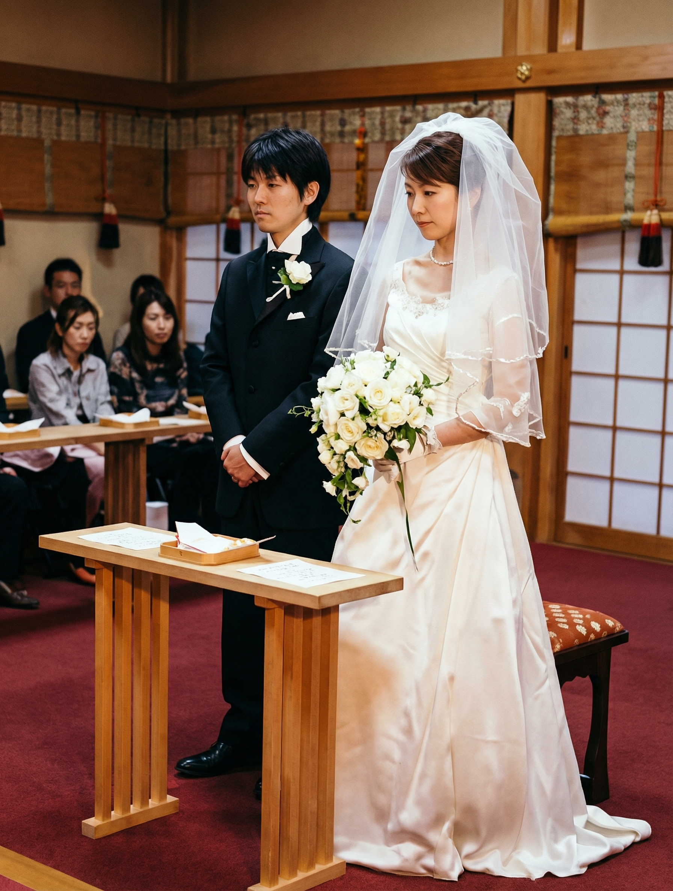

神前結婚式

御挨拶
縁結びの神さまは、皆様方よくご承知の通り出雲の神さま、ダイコクさまとして親しまれている大国主神であります。
出雲大社東京分祠は出雲大社の御祭神大国主神の御分霊を奉斎する都内でも最古の社であり、従って神前結婚式も都内各神社に先んじて明治31年より始めた古い歴史と伝統を有して居りまして当神殿にて挙式相成ることは新郎新婦の幾千代かけて壽ぐ一生一度の御慶事を一層意義づけることゝ存じます。
尚全国に名高い出雲式の祭儀を以って広く皆様の御婚儀を御奉仕申上げ度いと念願致して居ります。
挙式について
伝統ある出雲式の神前結婚式を執り行います
御神前での結婚式は従来、和装にて執り行われてまいりましたが、近年では洋装（ウェディングドレスやスーツなど）での挙式を望む方が増えております。
出雲大社東京分祠ではお二人らしい服装であれば和装・洋装にかかわらず、お取次ぎ申し上げます。
実際に、当出雲大社東京分祠ではプロ野球選手の石井一久投手とフジテレビの木佐彩子アナが２人だけで立ち寄り、普段着のままで式をあげました。

結婚式次第
| 参 進 |
| 斎主以下祭員着座 |
| 修 祓 |
| 皆様をお祓いいたします |
| 祝詞奏上 |
| 神様に二人の契りを報告いたします |
| 神 誡 |
| かみのみおしえが新郎新婦に諭されます |
| 新郎新婦玉串拝礼 |
| 神前に進み、玉串拝礼を行います |
| 指輪の交換 |
| 神前にて指輪交換 |
| 夫婦盃の儀 |
| 新郎新婦固めの盃 |
| 親族盃の儀 |
| 両家お固めの盃を交わします |
| ご親族代表玉串拝礼 |
| 両家代表、神前に進み玉串拝礼（一同拝礼） |
| 斎主挨拶 |
| 結びのご挨拶 |
| 退 下 |
| 拝殿より一同退出 |




挙式御初穂料
80,000円（奏樂付）
出雲大社奉斎の結婚式場御案内
出雲大社教の神職が出向して神前結婚式を執り行っている式場のご案内です
| 東京會舘 |
〒100-0005 東京都千代田区丸の内3-2-1 TEL：03-3215-2111 URL：https://www.kaikan.co.jp/ |
|---|---|
| 八芳園 |
〒108-8631 東京都港区白金台1-1-1 TEL：03-3443-3111 URL：http://www.happo-en.com/ |
| 如水会館 |
〒101-0003 東京都千代田区一ツ橋2-1-1 TEL：03-3261-1101 URL：https://www.kaikan.co.jp/josui/ |
| パレスホテル |
〒100-0005 東京都千代田区丸の内1-1-1 TEL：03-3211-5211 URL：https://www.palacehotel.co.jp/ |
| 綱町三井倶楽部 |
〒108-0073 東京都港区三田2-3-7 TEL：03-3453-3011 URL：https://www.tsunamachimitsuiclub.co.jp/ |
お問い合わせ
神前結婚式についてのご相談は
TEL：03-3401-9301
（午前9時より午後5時まで）